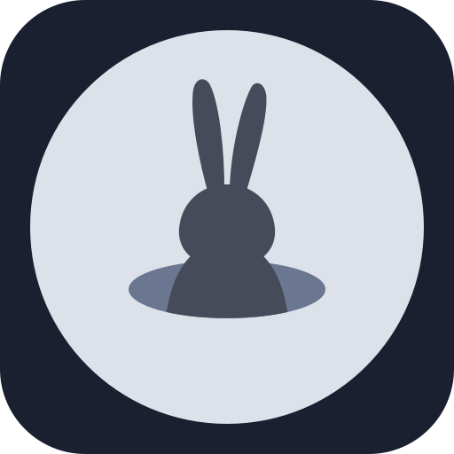
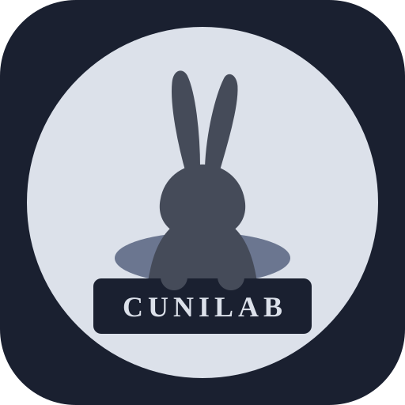

A rabbit
Small, fast, restless, and always curious.

Cunilab
Jakarta, Indonesia · Since 2025
Ask · Test · Build · Learn · Repeat
The name
It comes from the Latin cuniculus, a word with two meanings.
Small, fast, restless, and always curious.
A passage dug to reach something hidden. The Etruscans and Romans dug cuniculi to move water under the land.
One word covers the animal and the tunnel it digs. So Cunilab literally means the Rabbit Hole Lab: the place where we follow a question deeper than we planned and come back with something real.
That question is where every experiment here starts. We don't start with a product plan. We start with curiosity, turn it into an experiment, and build just enough to see what's real. Some experiments become tools. Some become knowledge. Some fail, and that's data too.
Philosophy
Curiosity is the compass. If a question won't leave us alone, it's worth chasing.
An idea only counts once we can touch it: a prototype, a test, a result.
A tunnel is only useful if it leads somewhere. Every experiment comes back with something.
Some tunnels go nowhere. We write that down too, so the next explorer saves time.
Method
Find a question worth asking. Study what's already known.
Turn assumptions into experiments. Look for evidence, not opinions.
Prototype before polishing. Make it real enough to try.
Keep what works. Write down what didn't. Ask the next question.
Output
Small, fast tests of an idea.
Things that turned out to be useful.
What we learned, including what failed.
The tunnels we'll dig next.
Not every experiment needs to become a product. Learning something reliable is already progress.
Lab rules
Ideas, issues, and contributions are welcome, even half-formed ones. Every good tunnel started as a small scratch in the ground.